Why a flat?
Home visits are hard to practise
Much health and social care work happens in people's homes. A practitioner has to read a room, notice what is out of place, build trust quickly and leave with a safe plan, often within a single visit.
MMU's physical Community Flat lets students rehearse this, but it can only host one group at a time and only when it's timetabled. The Flat opens the same space to every student, at any time, on the devices they already own.
What it is
A faithful, explorable copy
The flat was modelled from site measurements and a 3D scan of the real space, so room sizes, worktop and ceiling heights match the flat students will later stand in. It includes the communal corridor, hallway, kitchen, living room, bedroom and bathroom, all furnished.
Students walk around freely. They can open doors, cupboards, drawers and the fridge, switch the lights on and off, and sit down on the sofa. The same flat can be seen in the morning, at midday, in the evening or at night.
A look around
Inside the flat
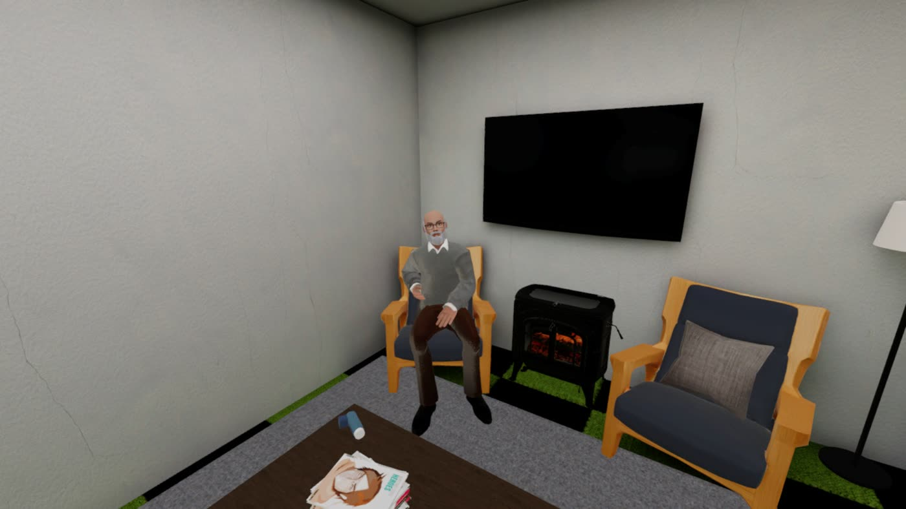
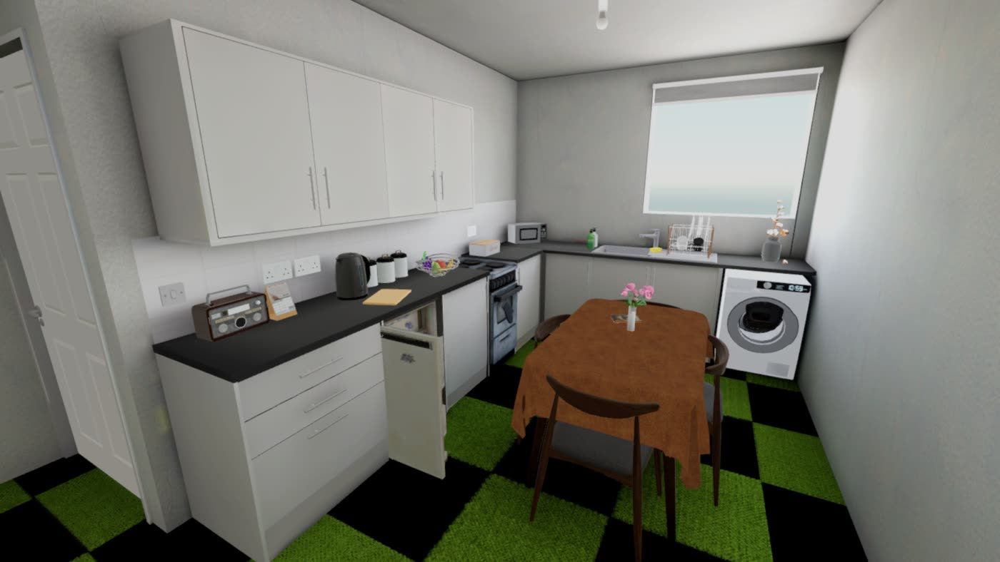
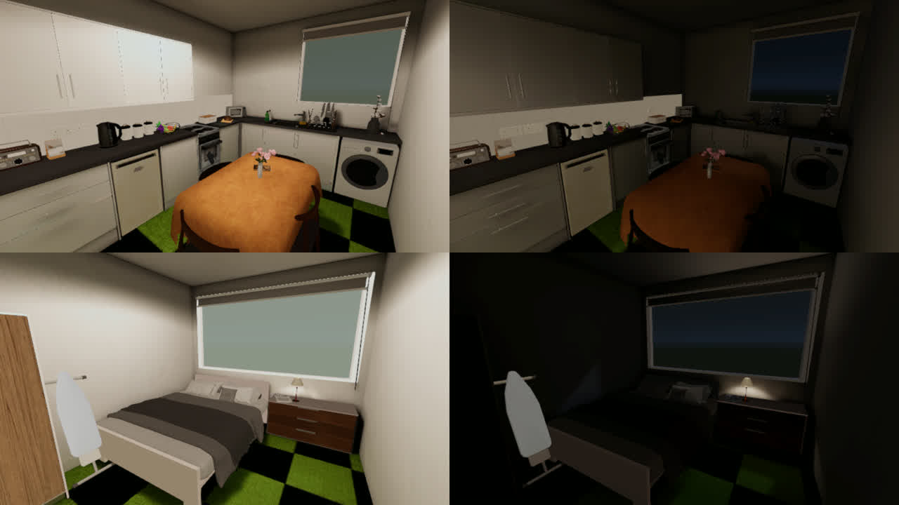
Pilot scenario
The missed appointment
Graham Knowles is 74, widowed and lives alone in a council flat in Kollworth. He has COPD and has missed his last two reviews, and his inhaler prescription hasn't been collected for six weeks. The student is a student nurse on placement with the community nursing team, and joins their practice educator, Sam, on a home visit. The scenario is part of the Chronic Disease Management virtual placement in Birley Place, MMU's simulated town, and takes about 30 to 40 minutes.
-
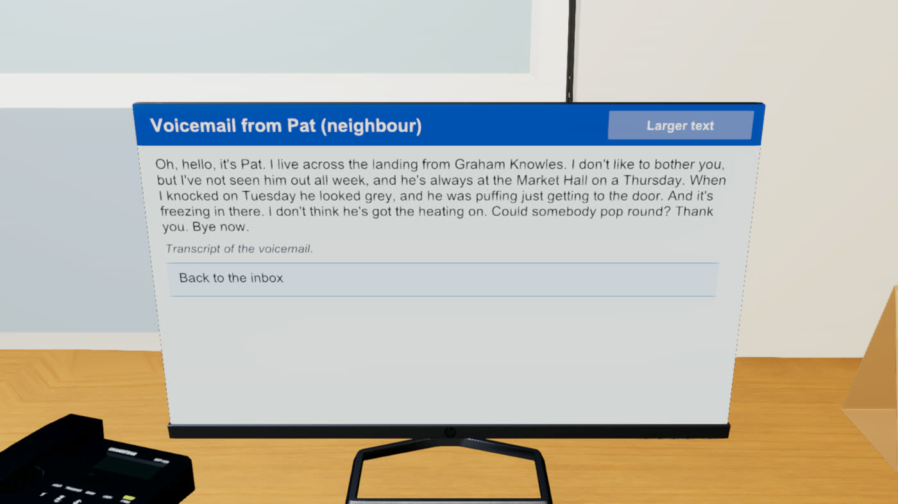
Briefing at the health centre
The visit begins at a desk in Kollworth Community Health Centre. Three messages are waiting in the inbox: an email from Sam, a flag from Reception about the second missed review, and a voicemail from Pat, the neighbour across the landing.
"I've not seen him out all week, and he's always at the Market Hall on a Thursday… Could somebody pop round?"
Students write their own notes on what Pat is worried about, then read Graham's case notes and Kollworth's public health figures.
-
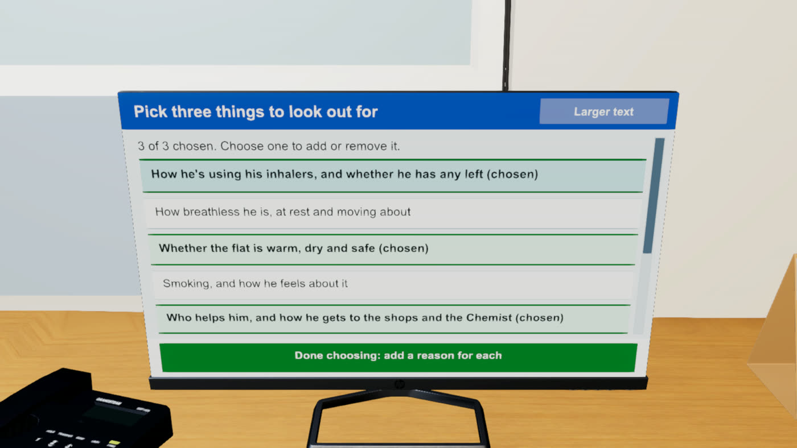
Plan what to look out for
From eight possible priorities, students choose three to focus on during the visit and give a reason for each. Sam replies to their choices. Good choices are confirmed, and weaker ones get a nudge to rethink: "What might stop someone with COPD getting to the health centre?"
-
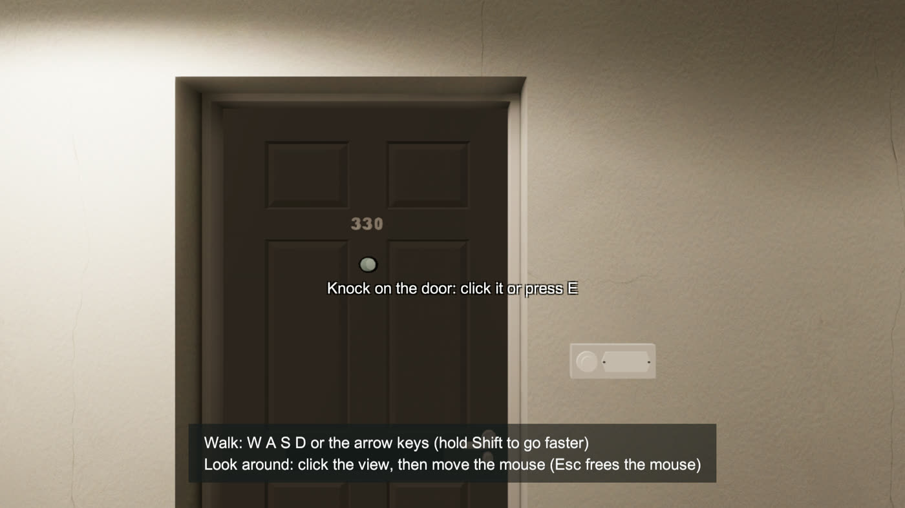
Arrive at the door
The scene moves to Graham's corridor at 2pm. Students ring the bell and knock, then wait while Graham gets up and slowly makes his way to the door. He opens it breathing hard, one hand on the frame, and says "Oh. You're from the health centre, aren't you?" How the student introduces themselves sets the tone for the visit.
-
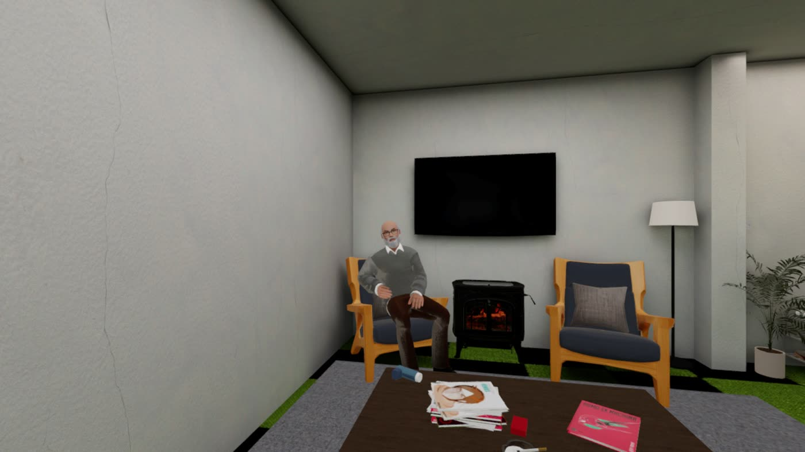
Talk with Graham
Graham walks back to his armchair, and the student sits down on the sofa. Graham speaks every reply aloud in a recorded voice, and his mouth moves with the words. Over several exchanges he talks about the walk to the Market Hall, the prescription he hasn't collected, keeping the heating off because "it's that dear now", and the odd cigarette.
Each response either builds rapport or erodes it. If he feels heard, he invites the student to look round. If not, he gets tired and ends the visit, and Sam reassures them on the stairs: "That happens sometimes, and it's not a failure." Students can step away from the conversation at any time.
-
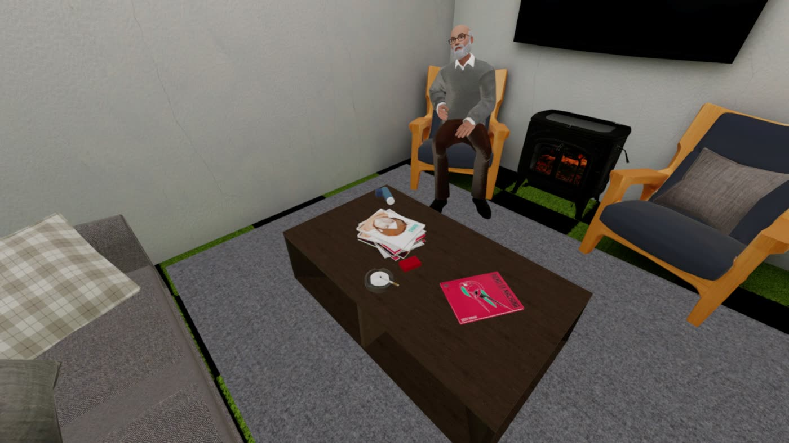
Look around the flat
There are ten things to notice, three in the hallway and seven in the rest of the flat. They include the blue inhaler on the coffee table with no sign of the brown preventer, an ashtray, the thermostat, a curling rug edge, the phone, a nearly empty fridge and mould behind the bed. Students find them by walking around, or from a "Things to look at" list.
Back on the sofa, they sort each find into a health risk, a social factor, both, or not sure.
-
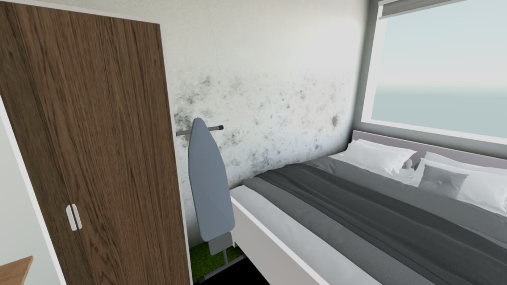
Agree next steps with Graham
"So what happens now?" Students suggest up to four next steps, such as a COPD review at home, prescription delivery, stop-smoking support, a community alarm, befriending, or advice on heating costs and benefits. They then talk each one through with Graham, who reacts in his own words, from "That'd be a weight off" to "Don't push me."
-
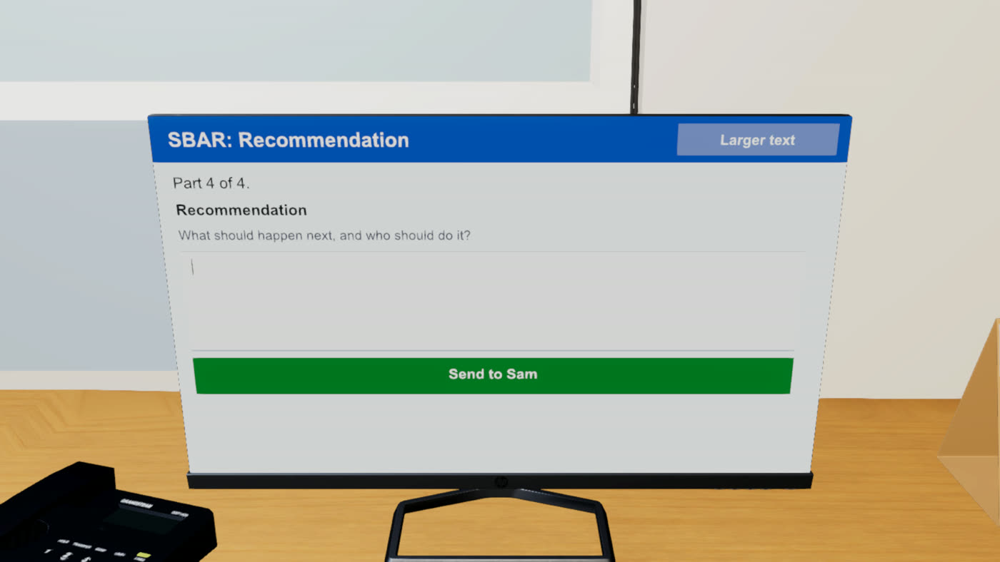
Hand over and reflect
Back at the health centre at 4:30pm, students write an SBAR handover (Situation, Background, Assessment, Recommendation) for Sam. Sam gives feedback on what they noticed and missed, and on whether their plan involves the right services. Two reflection questions follow.
The visit ends with a record of the SBAR, choices, findings, feedback and evidence against each learning outcome. Students can save it as a PDF for their placement portfolio or send it to their practice educator (see the record below).
What students take away
The visit record
At the end of the visit, students download a two-page A4 record of everything they did. It works as an assessment sheet: they can upload it to their placement portfolio or send it to their practice educator to discuss. This example comes from a strong attempt.
- Their SBAR handover to Sam
- The three priorities they chose, and why
- Their notes on Pat's voicemail
- What they noticed in the flat and how they classified it
- The plan they agreed with Graham
- Sam's feedback
- Their two reflections
- Evidence for each learning outcome, LO1 to LO5

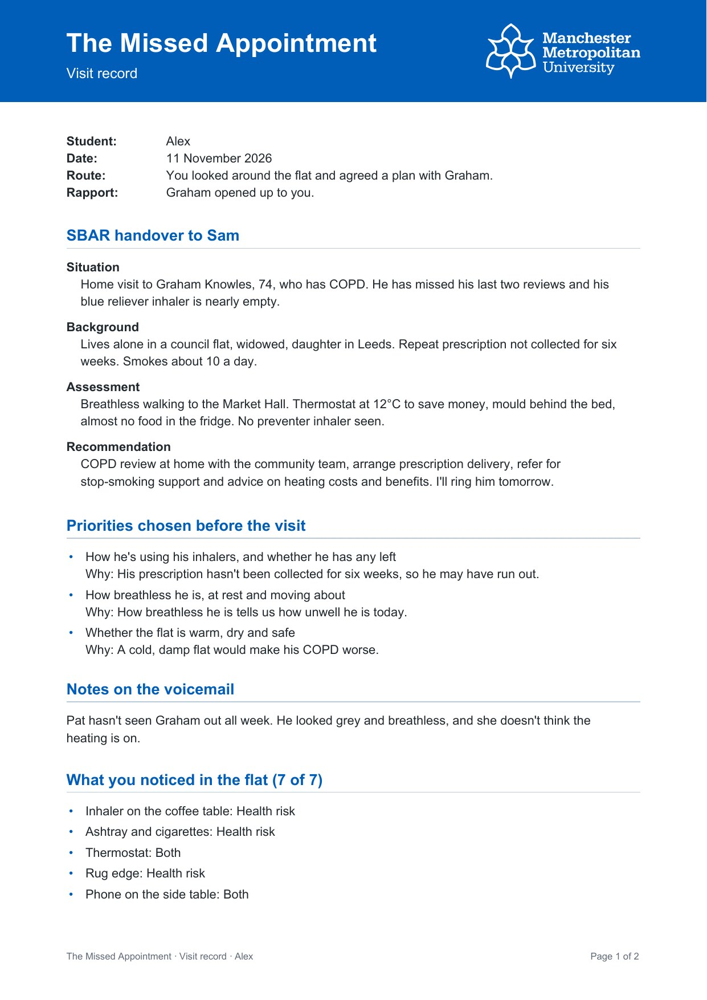

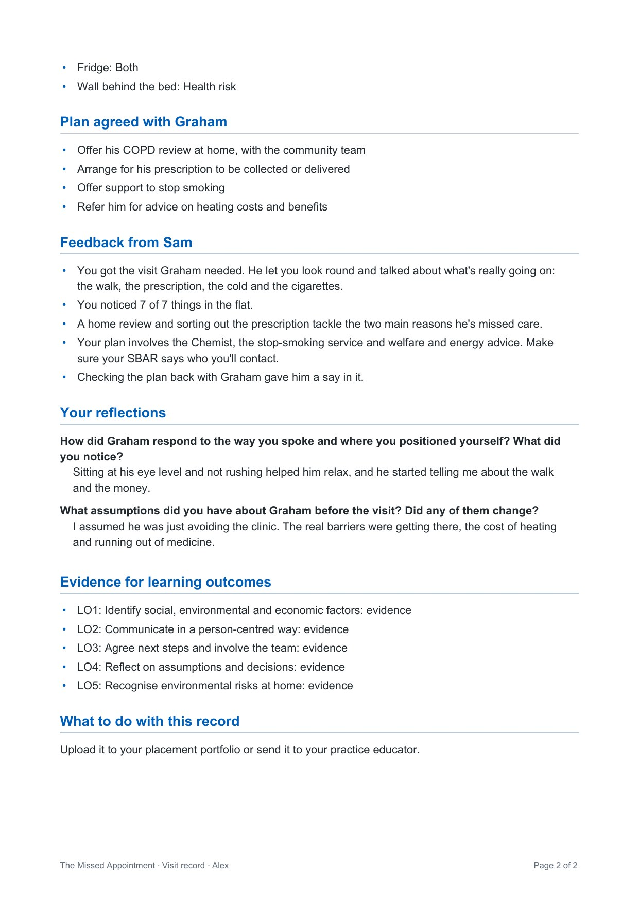
Educational value
Learning outcomes
The visit record shows whether a student has shown evidence for each outcome, based on what they did.
Identify social, environmental and economic factors
Choosing priorities before the visit, then finding the cold flat, the empty fridge and the money worries behind the missed appointments.
Communicate in a person-centred way
Sitting at Graham's level and responding to a man who is embarrassed, breathless and wary.
Agree next steps and involve the team
Building a plan with Graham, not for him, and knowing which services to bring in.
Reflect on assumptions and decisions
Responding to Sam's feedback and two reflection questions, and keeping the record as evidence.
Recognise environmental risks at home
Spotting mould, trip hazards, smoking and an unheated flat, and judging which are health risks and which are social factors.
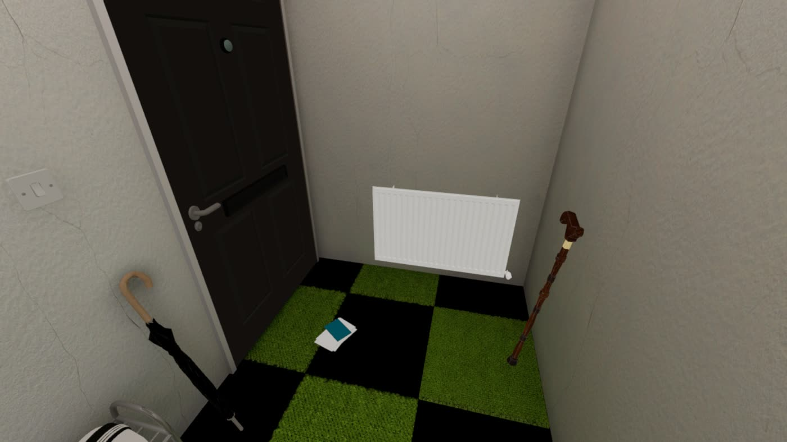
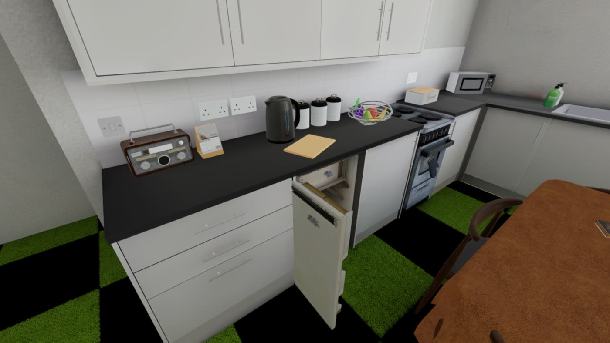
Safe to get wrong
Students can mishandle the conversation, miss the clues or have the visit cut short, and see what follows, without any risk to a real person. Then they can try again. Each attempt follows a cycle of experience, feedback, reflection and another try.
The same visit for every student
Every student meets the same Graham in the same flat, so seminar discussion and assessment start from shared ground. Different groups' priorities, plans and SBARs can be compared like for like.
For lecturers
Ways to use it in teaching
| When | How | Pairs well with |
|---|---|---|
| Before placement | Students complete the visit alone to get used to home-visit etiquette and the structure of a visit. | A short briefing on lone working and first impressions |
| Seminar | Play the visit on a shared screen, with the group deciding each response together. | Discussion of rapport and power in someone else's home |
| Independent study | Each student completes the scenario and brings their saved PDF record to class. | Peer comparison of priorities, plans and SBAR handovers |
| Before the real flat | A rehearsal before a live simulation in the physical Community Flat. | Debrief comparing the virtual and live visits |
Accessibility
Built for the devices students already have
Everything a student does runs in a web browser on a laptop or a phone. No headset or install is needed, and nothing has to be booked.
- Dialogue, choices and text answers appear as real web content that screen readers and keyboards can use, rather than being drawn inside the 3D view.
- A "Larger text" button on every panel, and a content note at the start because the visit touches on money worries and smoking.
- Clues can be found by walking around or from a "Things to look at" list. Both routes count equally.
- Mouse and keyboard on desktop. On phones there are on-screen touch controls, plus "Take me there" buttons that walk the student to the doorbell, the door or the sofa.
- Students can step away from the conversation, or close the page, at any time.
Under the hood
How it was made
- Built in Unity 6 and published to the web with WebGL.
- Room proportions checked against a 3D scan of the real flat.
- Lighting pre-calculated for four times of day, so the flat looks realistic on modest hardware.
- Graham is a real-time 3D character with recorded speech, a lip-sync that follows his voice, and motion-captured walking, sitting and standing.
- The scenario logic is checked automatically against the original paper prototype, covering all 729 conversation paths.
Status: pilot. Still to come are a playtest with students, screen-reader testing (NVDA, VoiceOver, TalkBack), iPhone testing, and more residents and scenarios built on the same framework.